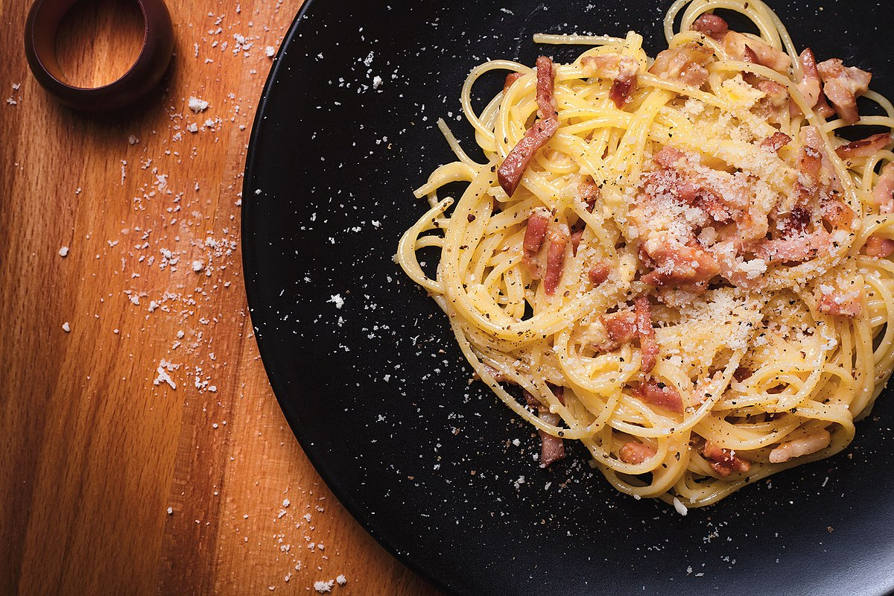

Carbonara

Description
Carbonara is an italian recipe usually paired with spaghetti although it can be paired with rigatoni or bucatini as well. It is believed that carbonara
comes from carbone, meaning coal in italian.
Ingredients
- Pasta, preferably spaghetti
- Egg yolk
- Guanciale, if not bacon is fine
- Cheese, preferably pecorino romano
- Black pepper
Steps
- First, you will need to beat the egg yolk just enough to make it an homogeneous mix with the pecorino cheese and the black pepper.
- Second, cook the guanciale in a pan without any oil, and wait until it is crispy.
- Then take the pasta and cook it with the guanciale for a couple of minutes.
- After that put out the fire, take the pan away from the heat and mix the egg yolk with the pasta and the guanciale.
- Finally grab some more cheese and sprinkle on top.